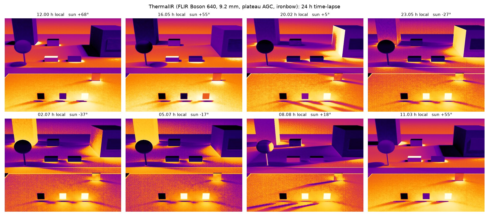

One scene over a day, seen by a simulated FLIR Boson 640 (9.2 mm, plateau AGC, ironbow palette). At night the sunlit wall keeps glowing: it stored heat all afternoon and is releasing it.
Simulation · 2026 · Ongoing
A thermal infrared camera for Unreal Engine 5 that computes temperatures from physics. Sun, sky, air, wind and surroundings drive transient heat conduction; the camera then sees the band radiance a real sensor would, through a model of its optics and detector.
One scene over a day, seen by a simulated FLIR Boson 640 (9.2 mm, plateau AGC, ironbow palette). At night the sunlit wall keeps glowing: it stored heat all afternoon and is releasing it.
Most "thermal" renders recolour a regular image. That looks plausible but is useless for training or testing real perception systems, because the numbers are wrong. Thermal contrast comes from history: what a surface absorbed hours ago, how fast it conducts and how well it radiates.
The physics core is engine-independent, unit-tested C++17. Per-pixel radiometry runs in HLSL inside Unreal materials. Every material and sensor preset cites its source, and the physics is documented equation by equation.

